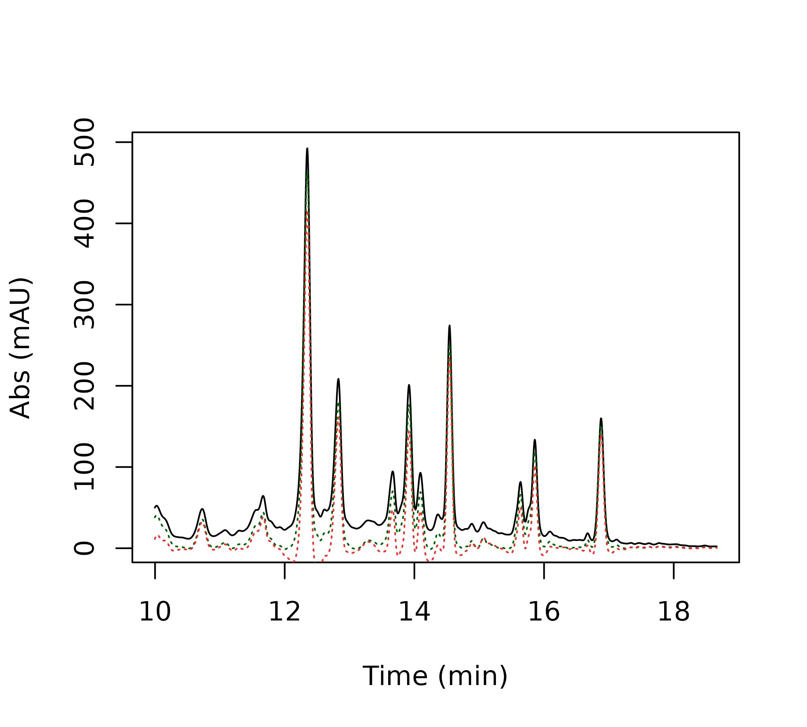
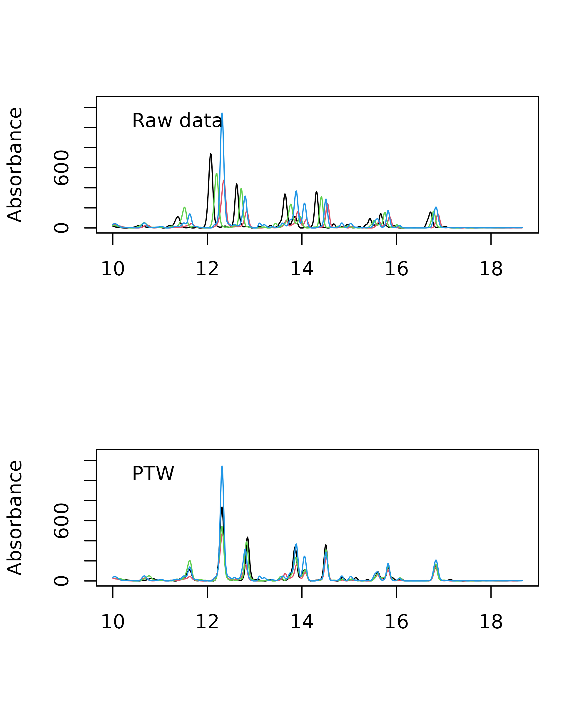
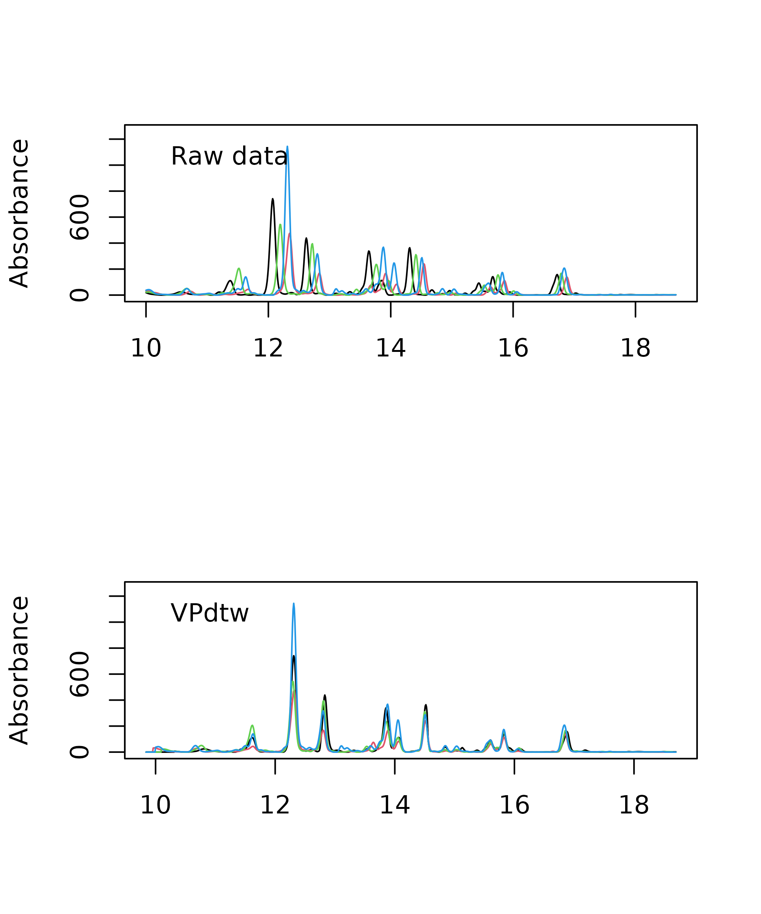
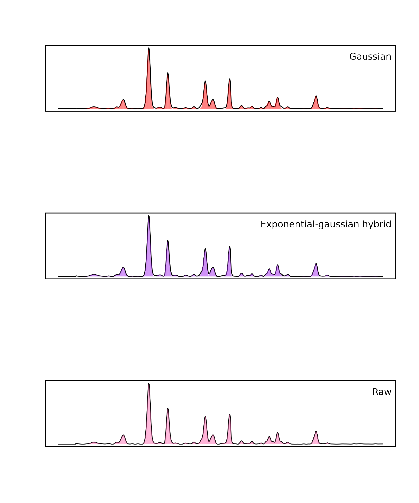
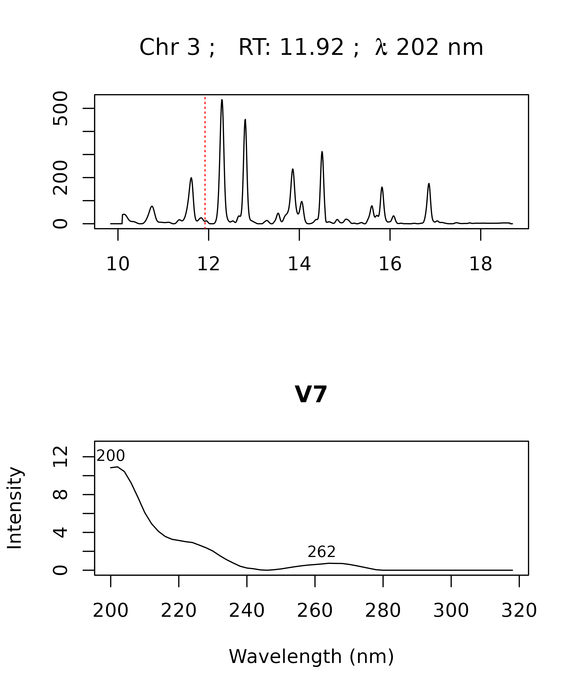
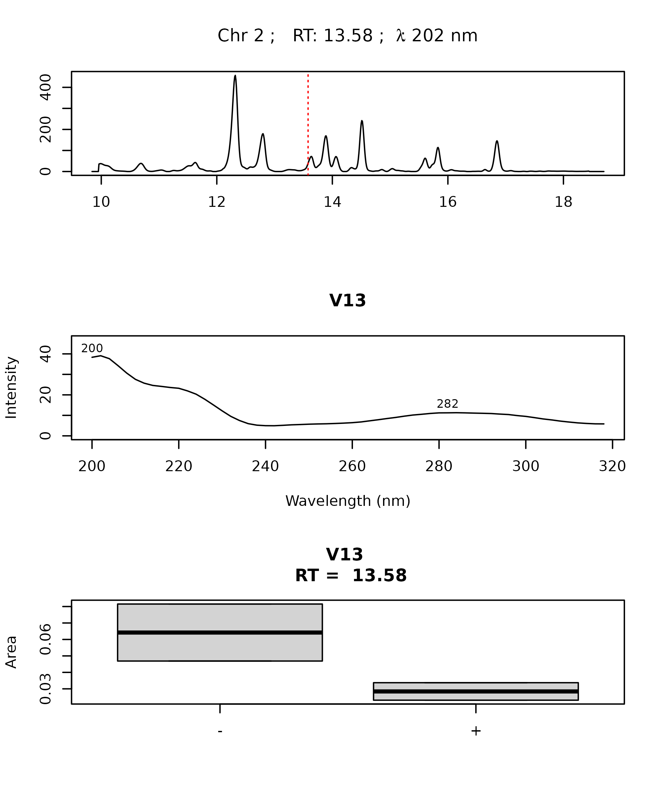

chromatographR: An introduction to HPLC-DAD analysis
Ethan Bass1
2024-11-04
Source:vignettes/chromatographR.Rmd
chromatographR.Rmd1 Department of Ecology and Evolutionary Biology, Cornell University, Ithaca NY
Introduction
chromatographR is a package for the reproducible analysis of
HPLC-DAD data in R. Liquid chromatography coupled to
diode-array detection (HPLC-DAD) remains one of the most popular
analytical methodologies due to its convenience and low-cost. However,
there are currently very few open-source tools available for analyzing
HPLC-DAD chromatograms or other “simple” chromatographic data. The use
of proprietary software for the analysis of HPLC-DAD data is currently a
significant barrier to reproducible science, since these tools are not
widely accessible, and usually require users to select complicated
options through a graphical user interface which cannot easily be
repeated. Reproducibility is much higher in command line workflows, like
chromatographR, where the entire analysis can be stored and
easily repeated by anyone using publicly available software.
The chromatographR package began as a fork from the previously published alsace package (Wehrens, Carvalho, and Fraser 2015), but has been reworked with improved functions for peak-finding, integration and peak table generation as well as a number of new tools for data visualization and downstream analysis. Unlike alsace, which emphasized multivariate curve resolution through alternating least squares (MCR-ALS), chromatographR is developed around a more conventional workflow that should seem more familiar to users of standard software tools for HPLC-DAD analysis. chromatographR includes tools for a) pre-processing, b) retention-time alignment, c) peak-finding, d) peak-integration and e) peak-table construction, as well as additional functions useful for analyzing the resulting peak table.
Workflow
Loading data
chromatographR can import data from a growing list of proprietary
file formats using the read_chroms function. Supported file
formats include ‘Agilent ChemStation’ and ‘MassHunter’ (.D)
files, ‘Thermo Raw’ (.raw), ‘Chromeleon’ UV ASCII
(.txt), ‘Waters ARW’ (.arw), ‘Shimadzu’ ASCII
(.txt), and more. (For a full list, see the chromConverter
documentation). Select the appropriate file format by specifying the
format_in argument (e.g. csv,
chemstation_uv, masshunter_dad,
chromeleon_uv, waters_arw, etc).
> # single folder
> read_chroms(paths = path, format_in = "chemstation_uv")
>
> # multiple folders
> path <- 'foo' # path to parent directory
> folders <- list.files(path = path, full.names = TRUE)
> dat <- read_chroms(folders, format_in = "chemstation_uv")Example data
The package includes some example data consisting of root extracts
from tall goldenrod (Solidago altissima). Roots were extracted
in 90% methanol and run on an Agilent 1100 HPLC coupled to a DAD
detector, according to a previously described method (Uesugi and Kessler 2013). The dataset is called
Sa (abbreviated from Solidago altissima).
> data(Sa)Pre-processing data
Data from liquid chromatography often suffer from a variety of
non-informative artifacts, such as noise or a drifting baseline. In
addition, the data produced by the instrument may have a higher
resolution or wider range (along either the time or spectral dimensions)
than we require. Fortunately, most of these issues can be remedied
fairly easily. For example, smoothing can reduce noise in the spectral
direction while baseline subtraction can help correct a drifting
baseline. Interpolation of wavelengths and retention times can be used
to reduce the dimensionality of the data, facilitating comparison across
samples and reducing the time and computational load required by
downstream analyses. All of these functions (smoothing, baseline
correction, and interpolation) are available through the
preprocess function and are enabled by default.
To select a narrower range of times and/or wavelengths, arguments can
be provided to the optional dim1 and dim2
arguments. The baseline_cor function from the ptw
package (Bloemberg et al. 2010) takes
arguments p (an asymmetry parameter) and
lambda (a smoothing parameter). You can read more about
these in the documentation for ptw::asysm. You may want to
experiment with these parameters before choosing values to use on your
whole dataset.
> i <- 2 # chromatogram number in list of data
> tpoints <- as.numeric(rownames(Sa[[i]]))
> lambda <- '200.00000'
>
> matplot(x = tpoints, y = Sa[[i]][,lambda],
+ type = 'l', ylab = 'Abs (mAU)', xlab = 'Time (min)')
> matplot(x = tpoints, y = ptw::baseline.corr(Sa[[i]][,lambda], p = .001, lambda = 1e5),
+ type = 'l', add = TRUE, col='blue', lty = 3)
After selecting parameters for baseline correction, you can proceed with the pre-processing step as shown below.
> # choose dimensions for interpolation
> new.ts <- seq(10, 18.66, by = .01) # choose time-points
> new.lambdas <- seq(200, 318, by = 2) # choose wavelengths
>
> dat.pr <- preprocess(Sa, dim1 = new.ts, dim2 = new.lambdas, p = .001, lambda = 1e5, cl = 1)Warning in preprocess(Sa, dim1 = new.ts, dim2 = new.lambdas, p = 0.001, : The `parallel` argument is deprecated. Just use the `cl` argument to enable
parallel processing.Alignment
In many cases, liquid chromatography can suffer from retention time
shifts (e.g. due to temperature fluctuations, column degradation, or
subtle changes in mobile-phase composition), which can make it very
difficult to compare peaks across samples. Luckily, a number of
“time-warping” algorithms have been developed for correcting these kinds
of shifts. In chromatographR, parametric time warping
(ptw) (Eilers 2004; Bloemberg et al.
2010) and variable penalty dynamic time warping
(vpdtw) (Clifford et al. 2009;
Clifford and Stone 2012) are available for correcting retention
time shifts through the correct_rt function. Both warping
functions aim to produce a better alignment of features by “warping” the
time-axis of each supplied chromatogram to match a reference
chromatogram. (The reference chromatogram can either be determined
algorithmically or selected manually by setting the
reference argument).
First, we check the alignment of our chromatograms using the
plot_chroms function.
> plot_chroms(dat.pr, lambdas = 210)
Our chromatograms appear to be shifted, as shown by the poor overlap of the chromatograms across our four samples. To remedy this problem, we can try to “warp” our chromatograms using one of the two options described above.
Parametric time warping
The ptw option can take a single wavelength or a list of
wavelengths provided by the user using the lambdas
argument. For each chromatogram, ptw then produces a
“global” warping function across all the wavelengths supplied by the
user. The code block below creates warping models for the samples in the
provided list of data matrices. The same function is then used to warp
each chromatogram according to the corresponding model, by setting the
models parameter. Depending on the variety of your samples
and the severity of the retention time shifts, it may take some
experimentation with the warping parameters to get satisfactory results.
Sometimes less can actually be more here – for example, wavelengths with
fewer peaks may sometimes yield better warping models. (Also see the
documentation for ptw for more guidance
on warp function optimization).
> warping.models <- correct_rt(dat.pr, what = "models", lambdas = c(210), scale = TRUE)
> warp <- correct_rt(chrom_list = dat.pr, models = warping.models, what = "corrected.values")We can then use the following code snippet to compare the alignment of warped (top panel) and unwarped (bottom panel) chromatograms.
> par(mfrow=c(2,1))
> # plot warped data
> plot_chroms(warp, lambdas = c(210))
> legend("topleft", legend = "ptw", bty = "n")
>
> # plot unwarped data
> plot_chroms(dat.pr, lambdas = c(210))
> legend("topleft", legend = "raw", bty = "n")
Clearly, the alignment is considerably improved after warping. You
can also use the correct_rt function to do a global
alignment on multiple wavelengths, by providing a list of wavelengths to
the lambdas argument, but this will not always improve the
results. While the alignment still isn’t perfect after warping, it is
probably good enough to align our peaks and assemble them in the peak
table, which is our primary goal.
Variable penalty dynamic time warping
Variable penalty dynamic time warping is another algorithm that can
be very effective for correcting retention time shifts (Clifford et al. 2009; Clifford and Stone 2012).
Instead of calculating an explicit warping function, dynamic time
warping (DTW) works by repeatedly shifting, expanding or contracting the
time axis in small steps until a satisfactory alignment is attained.
This process can result in very close matching of peaks, but can also
lead to severe peak distortion if the time axis is repeatedly expanded
and/or contracted (Tomasi, van den Berg, and
Andersson 2004). Variable penalty dynamic time
warping is a derivative of DTW that constrains expansion and
contraction of the time-axis by applying a penalty to these types of
“risky” moves. This can often achieve a very good alignment with minimal
peak distortion. VPdtw package is a suggested dependency since it
requires a working C++ compiler. Unlike ptw,
VPdtw can only take a single wavelength as input (but it
returns a global warping on the whole chromatographic matrix). The code
snippet below uses VPdtw to warp the example chromatograms using the
first chromatogram as a reference. The penalty and
maxshift parameters can be adjusted to control the degree
of warping.
> warp <- correct_rt(chrom_list = dat.pr, alg = "vpdtw", lambdas = 210,
+ what = "corrected.values", reference = 1)> par(mfrow=c(2,1))
> plot_chroms(warp, lambdas = c(210))
> legend("topleft", legend = "vpdtw", bty = "n")
>
> plot_chroms(dat.pr, lambdas = c(210))
> legend("topleft", legend = "raw", bty = "n")
In this case the alignments produced by the two algorithms are very similar, but in some cases one algorithm may dramatically outperform the other.
Peak detection and integration
The get_peaks function produced a nested list of peaks
by looping through the supplied chromatograms at the specified
wavelengths, finding peaks, and fitting them to the specified function
using non-linear least squares. The area under the curve for each peak
is then estimated using trapezoidal approximation. The fit
argument can be used to specify a peak-fitting model. The current
options are exponential-gaussian hybrid (egh) (Lan and Jorgenson 2001) (the default setting)
or gaussian. Alternatively, peak areas can be integrated
without applying a model (fit = raw). The function returns
a nested list of data.frames containing parameters for the peaks
identified in each chromatogram.
> # find and integrate peaks using gaussian peak fitting
> pks_gauss <- get_peaks(warp, lambdas = c(210), sd.max = 40, fit = "gaussian")
>
> # find and integrate peaks using exponential-gaussian hybrid model
> pks_egh <- get_peaks(warp, lambdas = c(210), sd.max = 40, fit = "egh")
>
> # find and integrate peaks without modeling peak shape
> pks_raw <- get_peaks(warp, lambdas = c(210), sd.max = 100, fit = "raw")Filtering
The peak-finding algorithm may often detect a lot of peaks that are
little more than noise. Thus, it is recommended to filter out extraneous
peaks at this stage (especially if you are processing a lot of samples)
as it can greatly reduce the computational load of peak table
construction. This can be accomplished directly by using the arguments
sd_max (to filter by peak width) and/or
amp_thresh (to filter by peak height). Alternatively, the
filter_peaks function can be used to filter peaks after the
peak_list has already been created.
Visualization
The plot.peak_list function allows you to visually
assess the peak integration accuracy. Below we compare the peaks fitted
for the first chromatogram (idx = 1) using the two
algorithms. Usually the egh function performs slightly better for
asymmetrical peaks. Even though the peaks are fully filled in when the
raw setting is selected, the results may not necessarily be
more accurate.
> par(mfrow=c(3,1))
> plot(pks_gauss, idx = 1, lambda = 210)
> legend("topright", "Gaussian", bty = "n")
>
> plot(pks_egh, idx = 1, lambda = 210)
> legend("topright", "Exponential-gaussian hybrid", bty = "n")
>
> plot(pks_raw, idx = 1, lambda = 210)
> legend("topright", "Raw", bty = "n")
Peak table assembly
After obtaining a peak_list, the get_peaks
function performs complete-linkage hierarchical clustering to link peaks
across samples. It returns a peak_table object with samples
as rows and peaks as columns. The peak_table object also
has slots for holding metadata about peaks, samples, and the parameters
used in the analysis. If you have a lot of samples, this step can be
quite computationally expensive. Thus, it is suggested to filter the
peak_list provided to get_peaktable in order to remove
extraneous peaks (see Peak finding and fitting section above).
Peaks can also be filtered after peak_table assembly using
the filter_peaktable function. An important parameter here
is hmax which controls the stringency with which retention
times are matched across samples. A low value of hmax will
increase the odds of splitting a single peaks across multiple columns,
while a high value of hmax will increase the odds of
erroneously combining multiple peaks into the same column.
> # assembly peak table from peak_list saved in `pks_egh`
> pk_tab <- get_peaktable(pks_egh, response = "area", hmax = 0.2)
>
> # print first six columns of peak table
> head(pk_tab$tab[,1:6]) V1 V2 V3 V4 V5 V6
119 5.496455 0.0000000 0.6572183 1.991365 15.199917 0.3114568
121 4.200859 1.0746359 0.6078366 0.000000 7.908693 0.0000000
122 8.261218 0.9544689 1.9510595 0.000000 25.772683 1.7912076
458 6.201729 2.2880101 1.9889770 5.308515 13.995000 0.2875473Further analysis and data-visualization
Attaching metadata
To begin analyzing your peak table, you will usually want to attach
sample metadata to the peak_table object. This can be
easily accomplished using the attach_metadata function.
This function takes a metadata argument which should be
supplied with a data.frame containing experimental
metadata, where one of the columns matches the names of your samples.
This column should be specified by supplying the column name as a string
to the column argument. This will attach the ordered
metadata in the sample_meta slot of your peak table. The
peak table can then be normalized (e.g. by dividing out the sample
weight) using the normalize_data function.
> # load example metadata
> path <- system.file("extdata", "Sa_metadata.csv", package = "chromatographR")
> meta <- read.csv(path)
> # attach metadata
> pk_tab <- attach_metadata(peak_table = pk_tab, metadata = meta, column = "vial")
> # normalize peak table by sample mass
> pk_tab <- normalize_data(peak_table = pk_tab, column = "mass")Attaching reference spectra
Optionally, you can attach scaled reference spectra to the peak_table
using the attach_ref_spectra function. This can be helpful
for working with UV spectra programmatically (e.g. to sort peaks by
their chromophores). Reference spectra are defined either as the
spectrum with the highest intensity for each peak (when
ref = "max.int") or as the spectrum with the highest
average correlation to the other spectra associated with the peak (when
ref = "max.cor"). Below, we show how these spectra can be
used to construct a correlation matrix to find peaks matching a
particular chromophore.
> pk_tab <- attach_ref_spectra(pk_tab, ref = "max.int")
> cor_matrix <- cor(pk_tab$ref_spectra)
> hx <- names(which(cor_matrix[,"V20"] > .99))
> matplot(x = as.numeric(rownames(pk_tab$ref_spectra)),
+ y = pk_tab$ref_spectra[, hx], type = 'l',
+ ylab = "Abs (mAU)",
+ xlab = "Wavelength (nm)")Data visualization
Mirror plot
The mirror_plot function provides a quick way to
visually compare results across treatment groups.
> mirror_plot(pk_tab, lambdas = c(210), var = "trt", legend_size = 2)Plotting spectra
The plot_spectrum function allows you to easily plot or
record the spectra associated with a particular peak in your peak table.
This is useful for interpreting your results and/or checking for errors
in your peak table. For example, you may want to check if the spectra
for a particular peak match across different samples, or you may want to
compare your spectrum with a known standard. The
plot_spectrum function can be used to plot only the
spectrum or only the chromatographic trace using the arguments
plot_spectrum and plot_trace. By default it
will plot the trace and spectrum from the chromatogram with the largest
peak in the peak table. Alternatively, you can choose the chromatogram
index and wavelength using the idx and lambda
arguments.
> par(mfrow = c(2,1))
> peak <- "V7"
> plot_spectrum(peak, peak_table = pk_tab, chrom_list = warp,
+ verbose = FALSE)
The plot_spectrum function can also be used to generate
interactive plots using plotly.
> plot_spectrum(peak, peak_table = pk_tab, chrom_list = warp,
+ verbose = FALSE, engine = "plotly")The plot_all_spectra function can be used to visually
compare the spectra for a specified peak across all samples.
> peak <- "V13"
> plot_all_spectra(peak, peak_table = pk_tab, export = FALSE)Plot peak table function
The plot.peak_table function provides a simplified
interface to various options for plotting data from the
peak_table. For example, it can be used as a quick
interface to the plot_spectrum and
plot_all_spectra functions shown above. It can also be used
to quickly compare results across treatments by calling
boxplot.
> plot(pk_tab, loc = "V13", box_plot = TRUE, vars = "trt", verbose = FALSE)
References
Session Information
> sessionInfo()R version 4.4.2 (2024-10-31)
Platform: x86_64-pc-linux-gnu
Running under: Ubuntu 22.04.5 LTS
Matrix products: default
BLAS: /usr/lib/x86_64-linux-gnu/openblas-pthread/libblas.so.3
LAPACK: /usr/lib/x86_64-linux-gnu/openblas-pthread/libopenblasp-r0.3.20.so; LAPACK version 3.10.0
locale:
[1] LC_CTYPE=C.UTF-8 LC_NUMERIC=C LC_TIME=C.UTF-8
[4] LC_COLLATE=C.UTF-8 LC_MONETARY=C.UTF-8 LC_MESSAGES=C.UTF-8
[7] LC_PAPER=C.UTF-8 LC_NAME=C LC_ADDRESS=C
[10] LC_TELEPHONE=C LC_MEASUREMENT=C.UTF-8 LC_IDENTIFICATION=C
time zone: UTC
tzcode source: system (glibc)
attached base packages:
[1] parallel stats graphics grDevices utils datasets methods
[8] base
other attached packages:
[1] chromatographR_0.7.2 knitr_1.48
loaded via a namespace (and not attached):
[1] sass_0.4.9 utf8_1.2.4 generics_0.1.3
[4] tidyr_1.3.1 bitops_1.0-9 xml2_1.3.6
[7] fastcluster_1.2.6 stringi_1.8.4 lattice_0.22-6
[10] digest_0.6.37 magrittr_2.0.3 caTools_1.18.3
[13] chromConverter_0.2.1 evaluate_1.0.1 grid_4.4.2
[16] dynamicTreeCut_1.63-1 fastmap_1.2.0 cellranger_1.1.0
[19] jsonlite_1.8.9 Matrix_1.7-1 Formula_1.2-5
[22] purrr_1.0.2 fansi_1.0.6 scales_1.3.0
[25] pbapply_1.7-2 textshaping_0.4.0 jquerylib_0.1.4
[28] cli_3.6.3 rlang_1.1.4 munsell_0.5.1
[31] ptw_1.9-16 cachem_1.1.0 yaml_2.3.10
[34] tools_4.4.2 minpack.lm_1.2-4 dplyr_1.1.4
[37] colorspace_2.1-1 RcppDE_0.1.7 reticulate_1.39.0
[40] vctrs_0.6.5 R6_2.5.1 png_0.1-8
[43] lifecycle_1.0.4 stringr_1.5.1 fs_1.6.5
[46] htmlwidgets_1.6.4 ragg_1.3.3 pkgconfig_2.0.3
[49] desc_1.4.3 pkgdown_2.1.1.9000 bslib_0.8.0
[52] pillar_1.9.0 VPdtw_2.2.1 glue_1.8.0
[55] Rcpp_1.0.13-1 systemfonts_1.1.0 highr_0.11
[58] tidyselect_1.2.1 xfun_0.49 tibble_3.2.1
[61] farver_2.1.2 htmltools_0.5.8.1 rmarkdown_2.28
[64] compiler_4.4.2 readxl_1.4.3